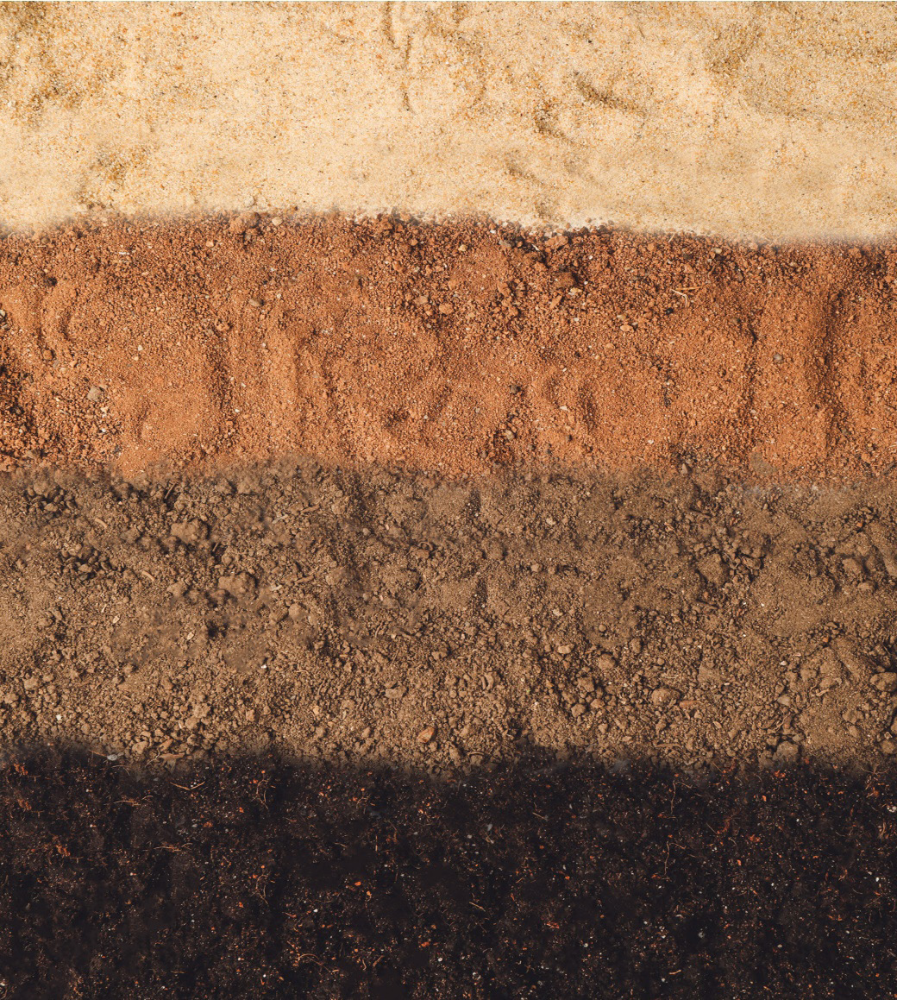

when using other materials like leaves, ashes and roots. The procedure for the soil is a little different from the petal colours.
Creating colours from nature for painting can be for fun and learning practically. This activity will solve challenges of material availability but also add skills that can trigger more creative ideas:
Painting colours from soil
Another source of natural colour is soil. The coloured soil can be obtained from different places within our places. Figure 3.19 shows soil of different colours.
